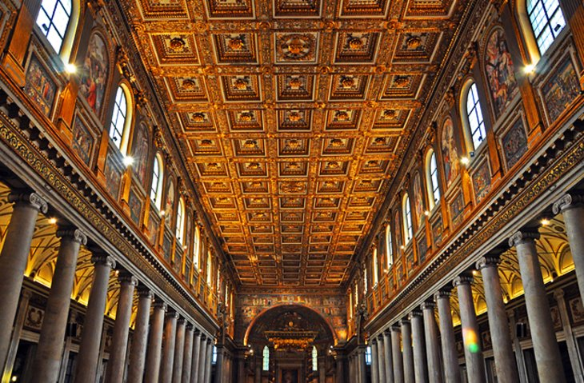
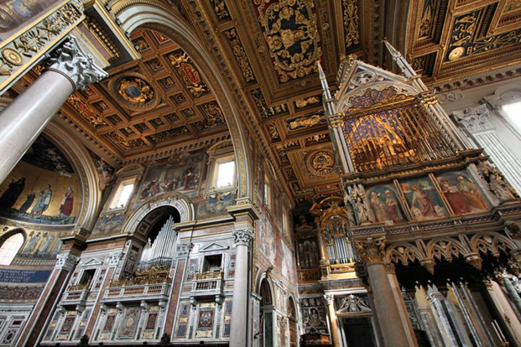

- Monuments of the Past -
Roman architecture is a type of ancient architecture that developed in Rome and the surrounding areas from around 509 BCE to 476 CE. It is characterized by its use of arches, vaults, domes, and concrete, as well as a focus on symmetry, proportion, and grandeur.
One of the most famous examples of Roman architecture is the Colosseum, an amphitheater in Rome that could seat up to 50,000 spectators. It is characterized by its use of arches and vaults, as well as its impressive size and intricate system of corridors and stairways.
Another famous example of Roman architecture is the Pantheon, a temple in Rome that was originally built in 27 BCE and later rebuilt in the 2nd century CE. It is known for its massive dome, which was the largest of its kind at the time, as well as its intricate use of concrete and marble.
Other notable examples of Roman architecture include aqueducts, which were used to transport water over long distances, and public buildings such as temples, basilicas, and forums. These buildings often featured intricate decorations and were designed to convey a sense of power and grandeur.
Roman architecture had a profound influence on later styles of architecture, including the Renaissance and Baroque styles. It is still admired today for its use of innovative building techniques, sophisticated engineering, and timeless beauty.
Colosseum

Trevi Fountain

- Beautiful Churces -
Rome is home to many beautiful and historic Roman Catholic churches, each with its own unique history and architectural style. Here are some examples of notable Roman Catholic churches in Rome:
St. Peter's Basilica: This is the most famous church in Rome and is located in Vatican City. It is considered one of the most important churches in Christendom and is the burial place of many popes. St. Peter's Basilica is known for its grand architecture, beautiful artwork, and impressive dome.
Basilica di Santa Maria Maggiore: This church is located on the Esquiline Hill and is one of the largest churches in Rome. It is known for its ornate interior, which features beautiful mosaics and frescoes, as well as its impressive bell tower.
Basilica di San Giovanni in Laterano: This is the oldest and most important of Rome's four major basilicas. It is located outside the city center and is known for its impressive façade, beautiful chapels, and large central nave.
Basilica di San Clemente: This church is located near the Colosseum and is known for its unique architecture, which includes multiple layers of construction from different periods of Roman history. It features stunning mosaics, frescoes, and sculptures, as well as a beautiful courtyard.
Chiesa di Sant'Ignazio di Loyola: This church is located near the Pantheon and is known for its beautiful ceiling fresco, which gives the illusion of a dome that is not actually present. It also features beautiful baroque architecture and a stunning altarpiece.
These are just a few examples of the many beautiful Roman Catholic churches in Rome. Each church has its own unique history and architectural style, and together they represent the rich cultural heritage of this ancient city.
Basilica di Santa Maria Maggiore

San Giovanni in Laterano
